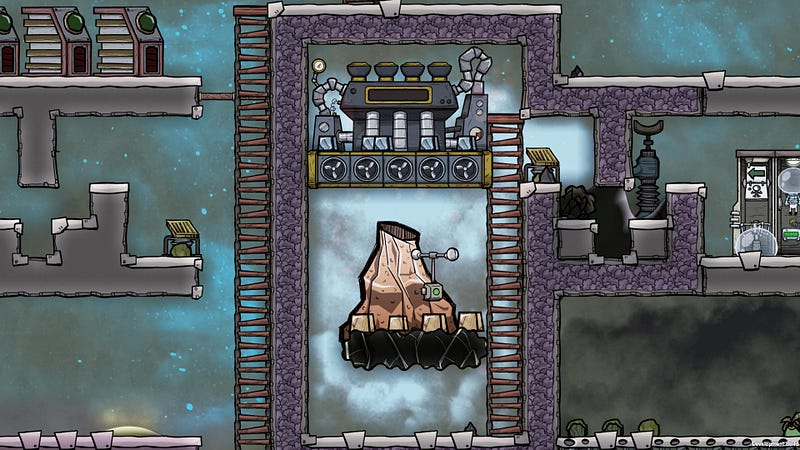
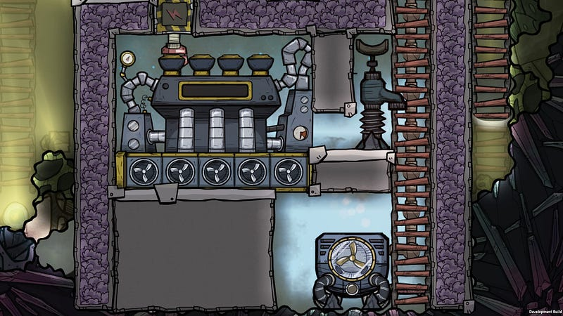
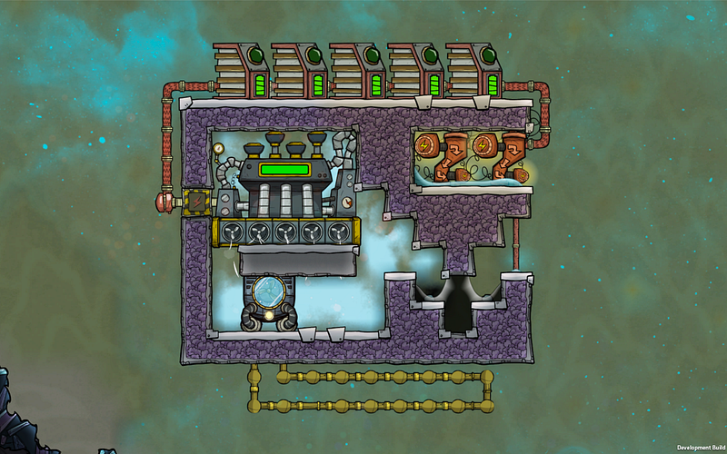
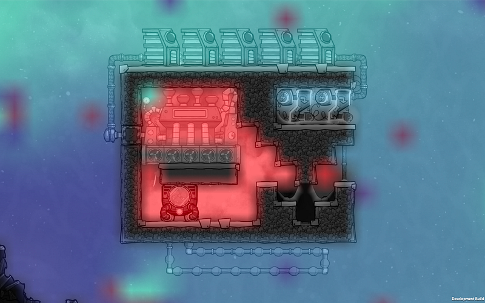

水蒸気タービンの設置方法
水蒸気タービンの設置方法
注：本記事はQoL Upgrade Mk3 以前の記事です。現時点で水蒸気タービンは仕様が変わっており、この方法は全く使えません
Oxygen Not Includedで水蒸気タービンを動かす条件は意外と込み入ってて、初見だと全然わからない。ここでは基本的な水蒸気タービンの動かし方を説明する。

水蒸気タービンを動かす条件
まずは水蒸気タービンを動かすための基本条件から。これがわからなくてただの石と化している水蒸気タービンがマップに鎮座している人も多いだろう。
- 水蒸気タービンの真下のマスに水蒸気があること（QoL Upgrade Mk2の時点では、全てのマスでなくても、ひとつでもいいのでマスに水蒸気があれば良い、みたい）
- 水蒸気タービンの水蒸気が最低226.9℃以上あること
- 水蒸気タービンの真上と真下のマスの水蒸気の気圧差が最低3000g以上あること（真上のほうが真下より気圧が低くないといけない）
この条件を満たしている間は水蒸気タービンが動く。
なお水蒸気タービンを安定稼働させて電気を得る事は当然可能だが、ONIでは水蒸気タービンの主目的は発電ではなく、冷却と認識すべきだ。
後述するが、水蒸気タービンは浄水器等と同じで、消費する水蒸気の温度が何度であっても一定の温度で排出する。この温度差の分の熱が電気になり、現象的には冷却が起こることになる。水蒸気を温めるための熱がここで消えるわけだ。
なので、電気のために水蒸気タービンを建てるのではなく、冷却を行うついでに発電する、という形を作ることになる。水蒸気タービンを使う時はその点を心にとどめておいてほしい。
水蒸気の手配
まだやったことがないなら最初のハードルは水蒸気を作るところだろう。
真水から水蒸気を作るなら最低103℃、汚染水なら最低119.4℃まで熱しないといけない。そこからさらに226.85℃まで温度をあげる必要がある。なお、水を水蒸気に変えるとかなりの気圧になるので、水蒸気タービンを回す目的の場合は本当に少しずつ水を熱源に追加するようにするべきだ。
自然を使う
マップにランダムに生成される高熱間欠泉500℃、金属火山や通常の火山なら2000℃前後のの溶解した成分を放出するので、ここに水をかけると一瞬で水蒸気を得ることができる
だが、これら自然由来の施設はなかなか扱いが難しいので要注意だ。
なぜならこれらの仕組みはいつ噴火するか制御できない。これが人工施設ならセンサーと組み合わせることにより、好きなタイミングでオン・オフできるので、加熱したいとき、冷却したい時で比較的自由に制御できる。
同じ理由で金属火山等を使う場合は温度を226.85℃にあげるのがなかなか難しい。基本的にはある程度水をいれておいて、あとは温度が上がるのを待ち続けるしかない。
水の量、熱源の特性にもよるが、臨界温度に達するまで50～100サイクルくらいはゆうにかかる。
発電開始を待つ時間があって、なおかつ設計・その他にある程度自信があるなら、こちらでも問題はないと思う。
機械を使う
これを読んでいる人は初級〜中級者だろうから、とりあえず安定して水蒸気タービンを運用するには機械類を使って熱を作るべきだろう。
機械を使う場合は前もってある程度ゲーム内の素材等の熱特性を調べておくべきだが、それさえ押さえていれば確実に必要な水蒸気を作れる。
素材の熱特性というのは例えば、断熱にはセラミック以上の素材を使うべき、というようなことや、一旦稼働し始めた水蒸気タービン部屋でプラスチック素材を使った機械の解体はやめた方がいい（回収する間もなく、溶けてナフタになってしまう）という類のことだ。
ただ、機械を使う方法では熱源となる機械を動かす電源が必要となる。液体クーラーだと1200W使うので結構なものだ。もしこちらの方法をとるなら、液体クーラー自体の昨日をちゃんと扱える状態で行う事。
機械で意図的に水蒸気を発生させにはまずゲーム内で鋼鉄を順調に生産できるまで待つべきだ。
鋼鉄で作った機械類はオーバーヒート温度が+200℃というボーナスが付くので、他の素材で作った場合は75℃で壊れる機械でも鋼鉄なら275℃まで耐えられることになり、センサー等で防御してやれば比較的安全に水蒸気用の高熱環境を実現できる。
前述の液体クーラーは1200Wの電力を使うことにより、14℃分の熱を液体から奪い、機械本体に移す。機械が熱くなった分は環境に伝わるので、すぐに該当の部屋は熱くなる。
この機械に水を垂らしてやれば比較的すぐに水蒸気ができあがるはずだ。あとはそのまま226.85℃まで加熱しつづける。
気圧差を作る
次に必要な条件は3000gの気圧差だ。これが意外と難しい。
とりあえず普通に上の部屋と下の部屋にわけて、吸気ポンプで上→下へと水蒸気を送り続けて気圧差を作るとする。
一旦3000gの気圧差が生まれれば、水蒸気タービンが動き出すが、同時に上に発電に利用した後の水蒸気が出てきてその分気圧がたかまり、そのうちまたタービンは止まってしまうだろう。
じつは水蒸気タービンの下部にある水蒸気インテイクは各マスひとつに付き2kg/secの水蒸気が吸い込まれ、上部から151.85℃ででてくる。インテイクが全部有効になっていれば、10kg/secである。3000gの気圧差なんて一瞬で相殺されてしまう。
ちなみに浄水器等と同じで吸入される水蒸気の温度がどんなに高くても排出温度は一定である（らしい）。
つまり、仮に水蒸気タービンをずっと稼働させたい場合、10kg分の移動ができる吸気ポンプが必要なわけで、吸気ポンプはひとつにつき500g/sec吸入できるので20台必要… に… なる… 無理だろ、これ。仮にインテイクをひとつだけ有効にしていた場合でも4台必要になる。
そこで古の先人達が編み出したのが、装置上部で水蒸気を冷却して真水に戻したり、ドアの自動開閉によるポンプであったり、水蒸気を宇宙に捨てたり… という様々な方法だ。
やり方はひとつではないので、お好きな方法を使ってもらっていいのだが、ここでは「部屋に別の気体を注入する」という方法を紹介する。
気体混入方式
いくつかある方法の中で気体混入方式を自分が選ぶ理由のは、このゲームではマップ内の任意のマスには一種類の気体しか存在できない特性があるからだ。
つまり、水蒸気の気圧より明らかに低い気圧の別の気体を水蒸気タービン上部にいれておけば、常に3000gの気圧差を維持できるわけだ。
水蒸気をポンプやドアなどをの仕掛けや電気を使うとどうしても水蒸気が動き終わるまでの時間がかかるが、この方法だと比較的早く、しかもコストゼロで気圧差を作れる。
これが気体混入方式の基本だ。
気体混入方式水蒸気タービン部屋の実装
水蒸気タービン部屋は必ず断熱タイルで囲む。少なくともセラミック以上の断熱性能がある素材にする。
部屋を作る際にまず気をつけたいのが、部屋の形だ。水蒸気より軽い機体を水蒸気タービンの上に保持しないといけないので、水蒸気タービンは部屋の一番上にあるべきだ。上に気体が抜ける道を作ってしまうとあとあと面倒くさい。
例えば、以下の形の部屋は明らかに失敗だった。右上のハシゴの先に出入り口があるのだが、このせいで調整をする度に気体が上に漏れて非常に面倒くさかった。

部屋の形を整えたら、部屋を密閉する。液体ロックなら真水・汚染水ではなく原油くらいの沸点の高さの液体を使う。
さらに余裕があるなら一旦部屋を真空にすると良いと思う。下手に二酸化炭素やらなにやらが入っているとたまに面倒くさいことになる。
準備ができたら水蒸気より軽い機体を水蒸気タービン部屋に入れる。これは水素でもいいし、酸素とかでもよい。自分は面倒なので今のところ酸素で通している。
この気体は、 最終的に水蒸気タービンの一番上のマスと被っていればよい。屋根の位置さえよければ正直どれくらい少量であっても1マス使う事になるので、重要なのは正しい位置にその気体が入っているということだ。
逆に気体を入れすぎると気圧差を作るために大量の水蒸気を作る必要があり、それはそれで面倒くさい。加熱により時間がかかるということ以外水蒸気はたくさんあってもいいので、急いでいなければ特に問題はない。
水蒸気タービンの上部から気体が逃げないように囲う。もちろん、ただ部屋の天井部分に隣接するように作るだけでもよい。とにかく気体が変なところに逃げていかないで、水蒸気タービン上部にとどまる形にする。
水蒸気タービンは下のインテイク全部を使う必要はないので、必要なところ以外はブロックしてしまうと良い。少なくとも現時点では発電量に差はなさそう。将来的にはわからないが。
水蒸気タービン上部と下のインテイクをつなぐパスは一方向に限定して、途中に熱源を配置する。こうすることによって、冷却された水蒸気が必ず熱源を通ってからインテイク側に移動する。
諸々できたら、熱源を稼働させて少量の水を垂らす。いきなり大量の水は入れないように注意。前述の通り、大量の水蒸気があってもいいのだが、とりあえず最初は少なめから始めたほうがよいからだ。

あとは待つだけ。そのうち発電が始まるはずだ。
上記画像の例では熱が230℃以上にならない前提の発電施設になっているそれ以上の熱を帯びるなら、素材も気をつけないといけないし、原油が気化してしまう可能性がでてくるので、完全に部屋を完成させてタイルで密封してしまうほうがいいかもしれない。
熱が高ければ高いほど、当然発電量は多くなる。ただ、前述の通り、発電そのものを目的とするより、なんらかしらの冷却のついでに発電できる、という程度の認識でいたほうが幸せになれる。

これで水蒸気タービンも怖くない！
追記：その後色々やってみたが、まだ一番効率が良い気体混入量がわからない。気体を満載にしてしまうとそれはそれで動かないっぽいし、少し余裕を持たせるのがいいのかもしれない…